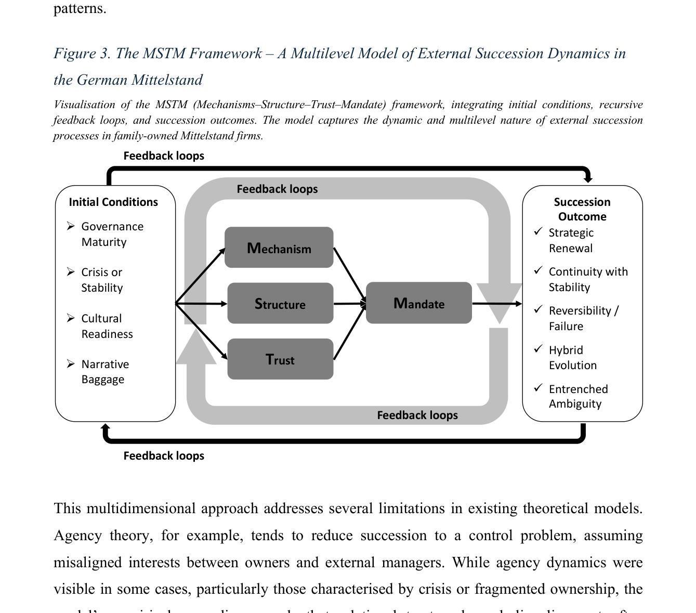
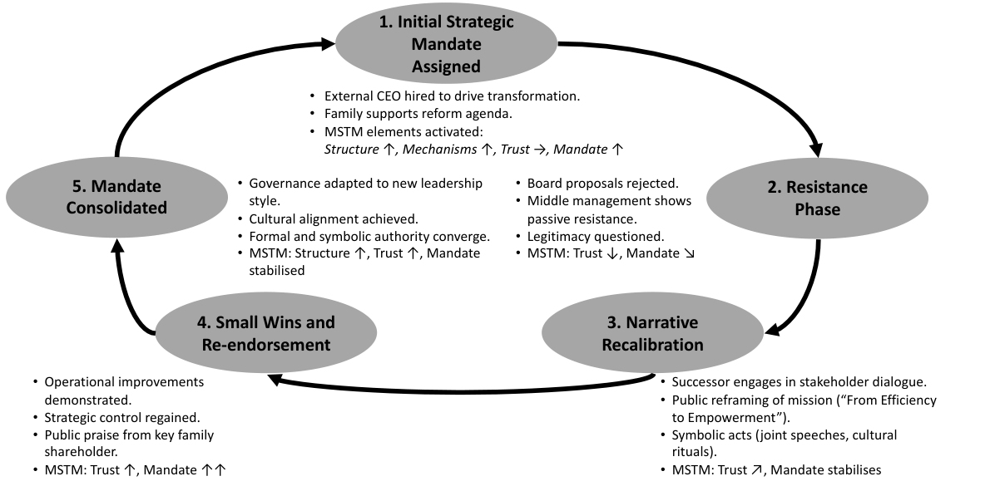
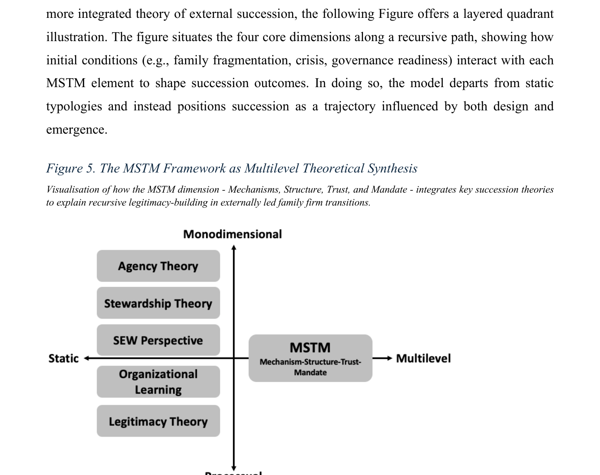
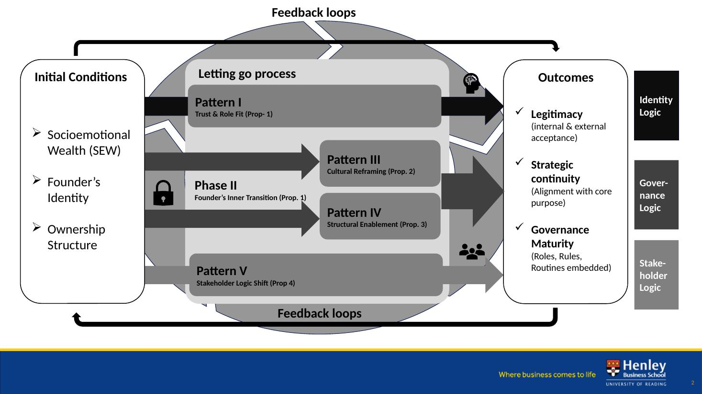
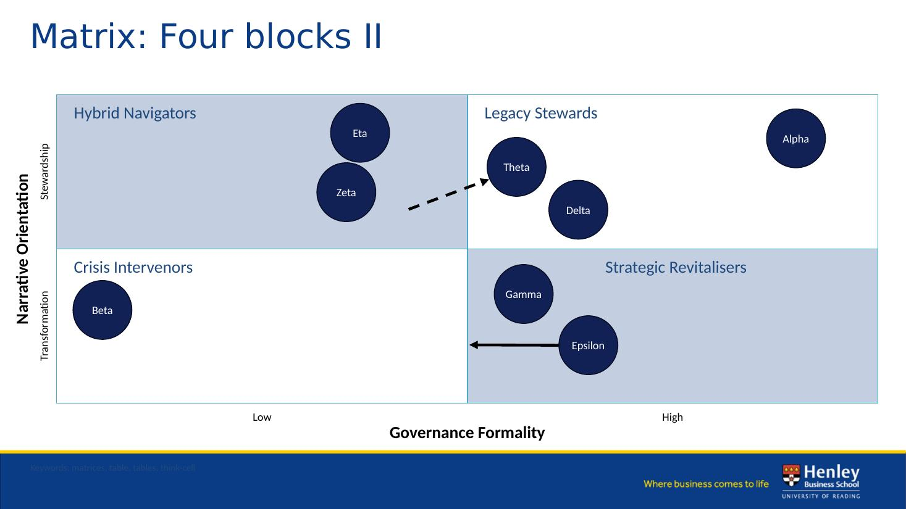
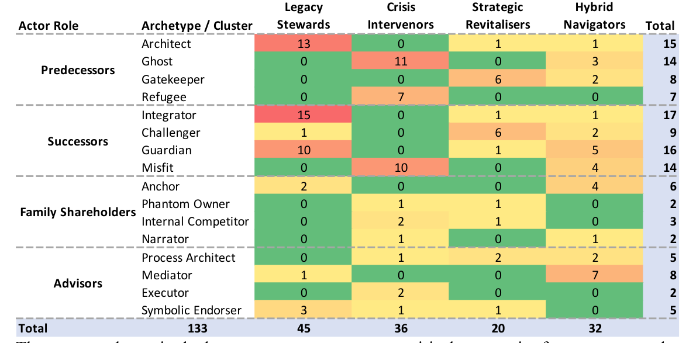
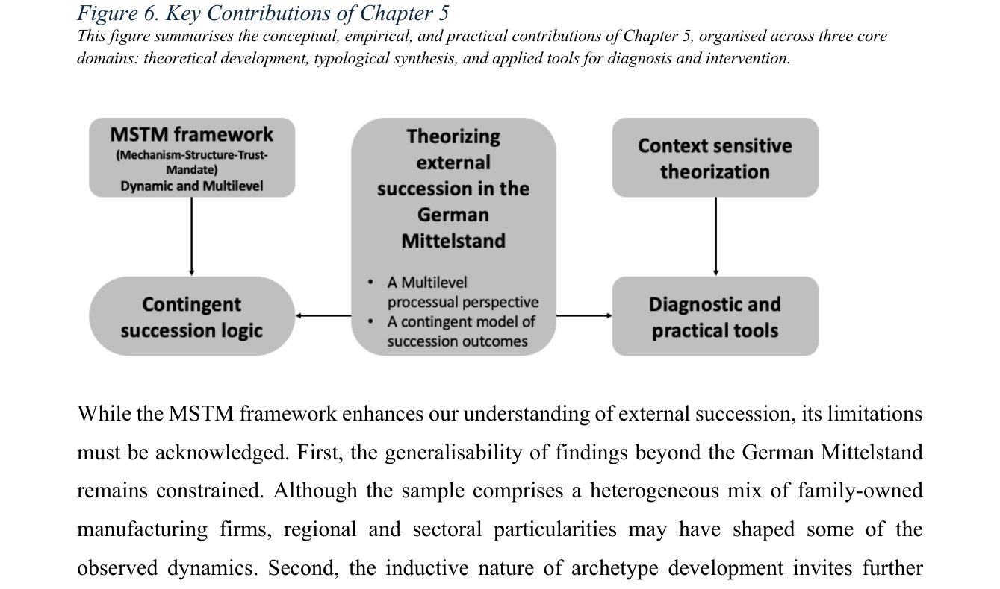

01 · Lecture overview
What this lecture sets out to do.
In forty-five minutes, this lecture moves from teaching philosophy through eighty years of organisational change theory to a 140-year-old Bavarian textile firm in existential crisis. Three acts; one argument; one model.
The Probevorlesung sits inside Module IFB19.3 — Organisation und Personal of the B.Sc. International Fashion Business at Reutlingen University, scheduled for the sixth or seventh semester as an elective (Modulhandbuch IFB, 2025, pp. 83–87). The module's official learning outcomes for change management are explicit: students should be able to describe relevant organisational theories, identify and evaluate organisational design in concrete practical examples, and characterise organisational culture together with the challenges and concepts of change management. Today's lecture is engineered to serve those three outcomes in sequence.
Teaching Concept
Three pillars — Practice First, Reflection Core, Decision Capability. The case-first learning loop. Anchored explicitly in IFB19.3.
Theoretical Models
Four generations of change theory — Lewin, Kotter, Weick, Hannan & Freeman. A fifth: MSTM, from doctoral research at Henley.
Applied Change in Fashion
The V. Fraas turnaround. Five patterns generalised to the industry. A research outlook for TEXOVERSUM.
02 · Hook
Why theory at all? Because change usually fails.
Across twenty-five years of empirical research, one finding has remained stubbornly stable: roughly seventy per cent of organisational change initiatives fail to meet their stated objectives. The number originates in Beer and Nohria's (2000) Harvard Business Review piece, was contested critically by Hughes (2011), reaffirmed by Kotter (2012), reviewed by Burnes (2011), and reproduced by McKinsey & Company (2023) in the State of Organizations report.
This is not a marketing number from a consulting firm — even Hughes, who critiques the headline figure on methodological grounds, concedes that the consensus across scholarly studies and large-N consulting research consistently lands in the 60–80 % range. For fashion graduates entering management roles, the implication is uncomfortable: in five years, statistically, seven out of ten transformation initiatives they are part of will not deliver on their objectives.
Failure rates of this magnitude do not mean change does not work. They mean our theories explain only part of the picture. Each generation of change theory captured something real and missed something else. The way to teach change well is to teach the full progression — and to be honest about where the current frontier sits.
03 · Pflichtthema 1 · Theoretical models
Four generations of organisational change theory.
Each generation answered the questions of its time — and exposed the limits of the previous. Click each generation to expand.
Kurt Lewin (1947) founded the field. Two contributions persist on every change-management slide deck in the world. First, the three-phase model — Unfreeze, Change, Refreeze. Second, force-field analysis — an organisation as a system of driving and restraining forces in dynamic equilibrium.
Applied to fashion today, the driving forces are visible: sustainability mandates, the shift to direct-to-consumer channels, the Gen-Z value shift. The restraining forces are equally visible: brand and heritage culture, wholesale dependency, legacy investments in physical retail.
Limit
Refreeze assumes a stable end-state. In fashion, the equilibrium itself is moving. Patagonia's Worn Wear initiative (launched 2013) is Lewin avant la lettre — but notice it never reaches refreeze. The brand operates in permanent motion.
Reference: Lewin (1947).
If Lewin asked how groups move, John Kotter asked how a leader makes them move. The eight-step model — urgency, coalition, vision, communicate, empower, quick wins, consolidate, anchor — is divided in half: steps one to four create the climate; steps five to eight engage and anchor. Kotter (2012) bridged academic theory and management practice in a way that made organisational change teachable. Beer and Nohria (2000) added the famous Theory E versus Theory O dichotomy, which still shapes consulting practice today.
Limit
Linear and rationalist. Treats organisations as machines a good plan can steer.
Fashion illustration
Burberry under Marco Gobbetti (2017–2021) ran a textbook Kotter sequence. The coalition: board, family trust, the hire of Riccardo Tisci as creative director. Quick wins: the B-Series drops. The anchor: a brand reset under the new Thomas Burberry monogram. It worked — but only because the coalition held.
References: Kotter (2012); Beer & Nohria (2000).
Karl Weick (1995) and Andrew Pettigrew (1987) challenged a foundational assumption. Organisations do not have change events; they are constantly becoming. Meaning precedes structure. Three insights: enactment (people construct the environments they then respond to); selection (from multiple plausible interpretations, the organisation selects one and acts as if it were true); retention (what worked once becomes the basis for future sensemaking, even when conditions shift).
Why couldn't Burberry, Gucci or Prada simply pivot to circularity? Because their organisational sensemaking was built around linearity, exclusivity and seasonality. The "truth" the brand had selected and retained over decades shapes what its people can even perceive as a credible move.
Limit
Rich on interpretation, thin on prescription. Weick tells us what change is, not how to lead it.
References: Weick (1995); Weick, Sutcliffe, & Obstfeld (2005); Pettigrew (1987).
Hannan and Freeman's (1984; later 1989) work brought a darker insight. Not all organisations can change. Three concepts: structural inertia (reliability and accountability create rigidity); selection versus adaptation (industries evolve through births and deaths of organisations, not only through individual firms adapting); density dependence (survival rates depend on the population — too few firms, no legitimacy; too many, destructive competition).
The fashion industry is a population — and populations have casualties. Recent DACH-region fatalities (2020–2025) include Esprit Europe (2024), Tom Tailor (2020), Galeria/Karstadt Kaufhof (2020 and 2023), Sinn (2020), and Hudson's Bay Germany (2023).
Limit
Powerful at population level — but silent on what the manager standing inside one of these organisations on a Monday morning can actually do.
Reference: Hannan & Freeman (1984).
How does an externally-mandated leader build the mechanisms, structures and trust required to actually transform an organisation that did not choose this change? This question is the everyday reality of CROs, restructuring leads and successor managers in fashion businesses. None of the four generations fully answers it.
04 · The doctoral contribution
The MSTM Framework — Generation 5.
MSTM stands for Multilevel Succession Transformation Model — built on its operational core: Mechanism · Structure · Trust → Mandate. Empirically derived from eight in-depth case studies of external successor CEOs in German-speaking Mittelstand family-owned manufacturing firms (Neusser, 2026, DBA Thesis, Henley Business School / University of Reading).
The MSTM core model
Originally derived from external CEO succession in family firms, the MSTM logic generalises to any externally-mandated transformation where the leader does not initially hold full legitimacy — including CRO turnarounds in heritage fashion businesses such as V. Fraas.
Initial Conditions
- Governance Maturity
- Crisis or Stability
- Cultural Readiness
- Narrative Baggage
Outcomes
- Strategic Renewal
- Continuity with Stability
- Reversibility / Failure
- Hybrid Evolution
- Entrenched Ambiguity
Schematic reproduction of the MSTM framework. Feedback loops connect outcomes to next-cycle initial conditions. Source: Neusser (2026), Figure 3, p. 176.

The four MSTM dimensions
Mechanism
Concrete instruments — restructuring concepts (e.g. IDW S 6), governance routines, cost programmes.
Structure
Reorganisation of formal architecture — reporting lines, decision rights, role design.
Trust
Active building of credibility with banks, employees, supervisory boards and family shareholders.
Mandate
The legitimacy granted by ownership, supervisory boards or creditors, and renewed at each phase.
The five-phase Mandate trajectory — click a phase
MSTM is not static. Across the doctoral case set, an externally-mandated change moves through five recursive phases. Click each phase pill to explore.
Source: Neusser (2026), Figure 4, p. 182. Mandate is not granted once — it is re-earned at each phase.

Where MSTM sits in the literature

05 · From the doctoral thesis
The six propositions of MSTM.
Six theoretical propositions emerged inductively from the cross-case analysis (Neusser, 2026, Chapter 5). Each is a testable conjecture that future research can probe in larger samples.
External-successor (EXT) readiness is not an individual trait but a relationally co-constructed process, shaped by the predecessor's letting-go behaviour, the family's symbolic endorsement, and the institutional readiness of the firm.
Relational trust between family owners and external successors is a recursive process — built through symbolic micro-decisions and routine credibility tests, not formally declared.
Institutional preparedness (governance maturity, role clarity, decision-rights design) moderates the effect of successor readiness on succession outcomes. High preparedness amplifies readiness; low preparedness erodes it.
Role legitimacy is built through symbolic alignment between the successor's actions and the family's narrative identity — gestures, rituals and visible decisions that signal "fit" beyond the formal mandate.
Misalignment across the four domains — competence, trust, governance, and cultural narrative — is the strongest predictor of succession reversal or entrenched ambiguity. Single-domain success is insufficient.
Successful external succession requires multi-level learning by the successor and the surrounding system — individual, dyadic (family–successor), and organisational. Single-level learning is insufficient.
Source: Neusser (2026), Chapter 5, pp. 251–252.
How the propositions map to MSTM patterns
Each proposition links to one of five empirical patterns observed across the case set. The figure below shows how Patterns I–V (Trust & Role Fit, Cultural Reframing, Structural Enablement, Stakeholder Logic Shift) emerge from the founder's letting-go process and produce the three outcome logics — identity, governance, stakeholder.

Empirical typology — four cluster archetypes
The eight focal cases (Alpha–Theta) cluster into four archetypes along two axes — Narrative Orientation (Stewardship ↔ Transformation) and Governance Formality (Low ↔ High):

Actor archetypes across stakeholder roles
Beyond the cluster typology, the thesis identifies sixteen stakeholder archetypes distributed across the four cluster types — predecessors, successors, family shareholders, and advisors:

06 · Pflichtthema 2 · Applied change in fashion
The V. Fraas case — 140 years of heritage in scarves.
Helmbrechts, Bavaria. A heritage manufacturer of scarves and accessories — clients ranging from luxury maisons to mass retail. Eight months as Chief Restructuring Officer between August 2023 and April 2024.
140
company history
≈ 80 m€
annual
≈ 400
at peak
< 90 d
payroll on day 1
Even — and especially — under existential pressure, the discipline of structured diagnosis is non-negotiable. The diagnosis covered four quadrants:
- Financial — 13-week cash plan, debt structure mapping, liquidity forecast per IDW Standard S 11 (IDW, 2014).
- Operational — order book, production cost per unit, bottleneck identification.
- Stakeholder — bank syndicate posture, works council position, owner family alignment.
- Strategic — brand & portfolio fit, customer concentration, competitive trajectory.
Which quadrant do leaders typically over-weight in a crisis — and why is that dangerous? — In my experience, financial. Because it is measurable. Strategic gets under-weighted — and is decisive long-term. Many turnarounds save the patient and lose the company.
In a turnaround, sequential change kills you. We ran three parallel tracks with disciplined sequencing inside each — and each had a different dominant MSTM dimension.
Liabilities & Liquidity
IDW S 6 restructuring report (IDW, 2018); IDW S 11 going-concern forecast (IDW, 2014); renegotiation with the bank syndicate.
Organisation & Structure
Reorganisation of reporting lines; decision-rights redesign; PMO for transformation governance; orderly closure of the German production site.
People & Culture
Works council negotiation; severance and re-skilling programme; leadership communication cadence; psychological safety for remaining staff.
Drawing on the Henley Postgraduate Certificate in Coaching for Behavioural Change. ADKAR (Hiatt, 2006) gives us five questions, asked of the workforce:
- Awareness — what do employees actually believe about why this is happening?
- Desire — what would make them want to participate, not just comply?
- Knowledge — do they have the skills the new structure demands?
- Ability — can they apply those skills under real conditions?
- Reinforcement — what anchors new behaviour after the CRO leaves?
In a heritage company, employees do not resist change. They grieve it. Treating that grief as resistance to be overcome is the single most common — and the single most damaging — error in fashion-industry restructurings. — from the Henley PGCert, drawing on Bridges (2009) and Kübler-Ross (1969) as adapted to organisations by Conner (1992).
Turnarounds are rarely "success" or "failure". They are about narrowing the loss and preserving optionality.
What we achieved
Liability side renegotiated with bank syndicate; restructuring plan adopted per IDW S 6; going-concern certified per IDW S 11; German production footprint exited in an orderly fashion; operational organisation stabilised for handover.
What we could not solve
The structural cost disadvantage of German textile production (a problem larger than any single company); long-term brand repositioning (outside CRO scope); workforce loss is real and not erased by orderly process; long-run survival under Generation 5 ecological pressure remains open.
Teaching change without teaching its limits is not teaching. It is selling.
07 · Generalisation
Five patterns — V. Fraas applied to fashion generally.
Five patterns observed across approximately forty CRO and turnaround mandates over twenty years, including textile, fashion and adjacent heritage industries.
Mandate is everything.
The first fourteen days set the trajectory. Without explicit governance authority, change stalls into politics.
Trust is built — not declared.
Bank confidence, employee buy-in, owner alignment. Each must be earned through visible micro-decisions, not announcements.
Heritage is asset and liability.
Brand history is the strongest reason to save the company — and the strongest reason it cannot change fast enough.
Sustainability is structural — not strategic.
ESG transitions in fashion fail when treated as marketing. They succeed when treated as governance redesign.
Digital change is leadership change.
D2C, AI, supply-chain digitalisation: the bottleneck is not technology — it is decision rights.
MSTM as a working frame.
Each pattern maps onto one or two MSTM dimensions. The model is a diagnostic, not a recipe.
08 · Where this plays out right now
Live examples from fashion & textile (2018 – 2025).
Cases I would use in seminar form. Use the filter to focus on a specific lens.
| Brand | Segment | What's happening | Lens |
|---|---|---|---|
| Burberry | Heritage luxury | Coalition (CEO + Tisci) rebuilt Mandate; Trust restored; Mechanisms via collection drops. | Kotter + MSTM |
| Wolford | Heritage hosiery | Repeat changes of CRO; Mandate never consolidated; Phase 5 not reached. | MSTM trajectory failure |
| Hugo Boss | Premium fashion | Daniel Grieder's "Claim 5" strategy: classic Vision/Communicate plus a structural decision-rights move. | Kotter at scale |
| Tom Tailor | Mid-market apparel | 2020 insolvency. Restructured but never re-positioned. | Hannan & Freeman live |
| Esprit Europe | Heritage casual | 2024 insolvency. Repeated brand resets without governance redesign. | Sensemaking failure |
| Trigema | Family textile | 2023 succession (Wolfgang Grupp → next generation). Mandate, Trust, Structure simultaneously renegotiated. | MSTM — succession variant |
| Patagonia | Outdoor / activist apparel | Worn Wear (2013→) is force-field analysis in motion: driving and restraining forces explicitly mapped before operational change. | Lewin (Gen 1) |
| Gucci | Luxury | The 2023–24 creative-leadership transition stalled in narrative recalibration — Phase 3 of the MSTM cycle without progression to small wins. | Weick + MSTM Phase 3 |
09 · The honest postscript
Beyond the four generations.
The four-generation framing is a pedagogical heuristic — not a literature review. Six contemporary streams sit in the gap between Generation 4 and MSTM. Each addresses a different question; MSTM connects to several of them.
The four traditions on the previous slides were chosen because each (a) operates at a distinct level of analysis, (b) asks a different leading question, and (c) appears as a backbone in mainstream Bachelor-level change-management textbooks (Schreyögg, 2016; Vahs, 2019; Senior & Swailes, 2020; Cameron & Green, 2019). They are not the only living traditions — they are the four that scaffold a 20-minute lecture for fashion business students. The streams below would belong in a longer treatment.
DiMaggio & Powell (1983); Greenwood, Suddaby & Hinings (2002); Greenwood & Hinings (2006). Organisations change in response to legitimacy pressures from their institutional field — coercive, mimetic, normative isomorphism. Radical change in mature institutional fields requires destabilising institutional logics.
How MSTM connects: Mandate is, in institutional terms, a granted legitimacy. Phase 3 (Narrative Recalibration) is institutional work in the sense of Lawrence & Suddaby (2006). The MSTM Initial Condition "Narrative Baggage" is institutional inheritance.
Smith & Lewis (2011); Putnam, Fairhurst & Banghart (2016). Organisations face persistent contradictions — exploration vs. exploitation, stability vs. change, individual vs. collective — that cannot be resolved, only managed productively. Successful change holds the tension rather than collapsing it.
How MSTM connects: Heritage as both asset and liability (Pattern 03) is paradoxical. The five-phase trajectory holds continuity (family identity) and transformation (external mandate) simultaneously. Hybrid Evolution outcomes are paradox-managing equilibria.
Feldman & Pentland (2003); Nicolini (2012); Feldman, Pentland, D'Adderio & Lazaric (2016). Organisational change is routine change. Routines have ostensive (idealised) and performative (enacted) aspects; change happens when actors re-perform them differently.
How MSTM connects: "Mechanism" in MSTM is, at its operational level, a routine — restructuring report, governance cadence, decision-rights process. Phase 4 (Small Wins and Re-endorsement) is routine performativity made visible.
Felin & Foss (2005); Felin, Foss & Heimeriks (2015). Organisational outcomes are produced by individual-level actions, interactions and cognition. Macro change rests on micro foundations.
How MSTM connects: Mandate is granted by individual stakeholders — board members, family shareholders, bank syndicate seats. Trust (the T) is a dyadic, individual-level construct that aggregates upward.
Teece, Pisano & Shuen (1997); Teece (2007); Helfat & Peteraf (2015). Firms compete on their capacity to sense opportunities, seize them, and reconfigure assets. Sensing-seizing-transforming is a meta-capability.
How MSTM connects: The MSTM trajectory is a dynamic capability for governance reconfiguration. Phase 5 (Mandate Consolidated) is the firm having internalised a sensing-seizing-transforming capacity around external leadership.
Tushman & Romanelli (1985); Gersick (1991); Plowman et al. (2007). Organisations evolve through long periods of stability (deep-structure inertia) interrupted by short revolutionary episodes — and small actions can trigger non-linear change.
How MSTM connects: External CEO succession is a punctuation. The Resistance Phase (2) is the deep structure resisting; Phases 3–4 are revolutionary recombination. MSTM is, in this lens, a process model of one specific punctuation event.
MSTM does not claim to be the next dominant theory. It claims to be one answer to a specific gap — the externally-mandated leader in a heritage governance context — that the four classical generations leave unanswered. Several of the streams above answer adjacent questions better than MSTM does. The teaching value is in showing students which question each frame answers.
09 · Research outlook for TEXOVERSUM
Three research streams.
Change Readiness in Fashion SMEs
Comparative case study of 8–12 German Mittelstand fashion textile firms. What organisational factors distinguish those that successfully navigated digital and sustainability transitions from those that did not?
Method: Multiple case study + Qualitative Comparative Analysis.
Sustainability Transition as Governance
Empirical investigation of how ESG transformation in fashion succeeds or fails as an organisational change — connecting MSTM to circular-economy literature and ecological resilience theory.
Method: Qualitative + framework development.
Crisis & Resilience in Heritage Fashion
Built on rare research access from forty CRO mandates. How do heritage fashion houses balance continuity and transformation under existential pressure? Of theoretical and policy interest.
Method: Process tracing + abductive theorising.

Funding paths: DFG, BMBF, EU Horizon, and industry-sponsored research with regional fashion partners.
10 · References (APA 7)
Cumulative reference list.
- Argyris, C., & Schön, D. A. (1996). Organizational learning II: Theory, method, and practice. Addison-Wesley.
- Beer, M., & Nohria, N. (2000). Cracking the code of change. Harvard Business Review, 78(3), 133–141.
- Bennis, W. G., & O'Toole, J. (2005). How business schools lost their way. Harvard Business Review, 83(5), 96–104.
- Bridges, W. (2009). Managing transitions: Making the most of change (3rd ed.). Da Capo Lifelong Books.
- Burnes, B. (2011). Introduction: Why does change fail, and what can we do about it? Journal of Change Management, 11(4), 445–450.
- Conner, D. R. (1992). Managing at the speed of change. Random House.
- Cameron, E., & Green, M. (2019). Making sense of change management (5th ed.). Kogan Page.
- Davis, J. H., Schoorman, F. D., & Donaldson, L. (1997). Toward a stewardship theory of management. Academy of Management Review, 22(1), 20–47.
- Dewey, J. (1938). Experience and education. Macmillan.
- DiMaggio, P. J., & Powell, W. W. (1983). The iron cage revisited: Institutional isomorphism and collective rationality in organizational fields. American Sociological Review, 48(2), 147–160.
- Eisenhardt, K. M. (1989). Agency theory: An assessment and review. Academy of Management Review, 14(1), 57–74.
- Feldman, M. S., & Pentland, B. T. (2003). Reconceptualizing organizational routines as a source of flexibility and change. Administrative Science Quarterly, 48(1), 94–118.
- Felin, T., & Foss, N. J. (2005). Strategic organization: A field in search of micro-foundations. Strategic Organization, 3(4), 441–455.
- Gersick, C. J. G. (1991). Revolutionary change theories: A multilevel exploration of the punctuated equilibrium paradigm. Academy of Management Review, 16(1), 10–36.
- Greenwood, R., & Hinings, C. R. (2006). Radical organizational change. In S. R. Clegg et al. (Eds.), The SAGE handbook of organization studies (2nd ed., pp. 814–842). Sage.
- Greenwood, R., Suddaby, R., & Hinings, C. R. (2002). Theorizing change: The role of professional associations in the transformation of institutionalized fields. Academy of Management Journal, 45(1), 58–80.
- EuroCommerce. (2023). Family-owned business in European retail and wholesale. Brussels.
- Gómez-Mejía, L. R., Haynes, K. T., Núñez-Nickel, M., Jacobson, K. J. L., & Moyano-Fuentes, J. (2007). Socioemotional wealth and business risks in family-controlled firms. Administrative Science Quarterly, 52(1), 106–137.
- Hannan, M. T., & Freeman, J. (1984). Structural inertia and organizational change. American Sociological Review, 49(2), 149–164.
- Hannan, M. T., & Freeman, J. (1989). Organizational ecology. Harvard University Press.
- Hiatt, J. M. (2006). ADKAR: A model for change in business, government and our community. Prosci.
- Hughes, M. (2011). Do 70 per cent of all organizational change initiatives really fail? Journal of Change Management, 11(4), 451–464. https://doi.org/10.1080/14697017.2011.630506
- IDW. (2014). IDW S 11: Beurteilung des Vorliegens von Insolvenzeröffnungsgründen. Institut der Wirtschaftsprüfer.
- IDW. (2018). IDW S 6: Anforderungen an Sanierungskonzepte. Institut der Wirtschaftsprüfer.
- Karpicke, J. D., & Roediger, H. L. (2008). The critical importance of retrieval for learning. Science, 319(5865), 966–968.
- Kolb, D. A. (1984). Experiential learning: Experience as the source of learning and development. Prentice-Hall.
- Kotter, J. P. (2012). Leading change (2nd ed.). Harvard Business Review Press.
- Kübler-Ross, E. (1969). On death and dying. Macmillan.
- Lewin, K. (1947). Frontiers in group dynamics. Human Relations, 1(1), 5–41.
- Lyman, F. (1981). The responsive classroom discussion: The inclusion of all students. In A. Anderson (Ed.), Mainstreaming digest (pp. 109–113). University of Maryland.
- McKinsey & Company. (2023, April 26). The state of organizations 2023: Making change at scale. McKinsey & Company. https://www.mckinsey.com/capabilities/people-and-organizational-performance/our-insights/the-state-of-organizations-2023
- McKinsey & Company, & The Business of Fashion. (2024, November 11). The state of fashion 2025: Challenges at every turn. Business of Fashion. https://www.mckinsey.com/industries/retail/our-insights/state-of-fashion-2025
- Mintzberg, H. (2004). Managers not MBAs. Berrett-Koehler.
- Modulhandbuch International Fashion Business (B.Sc.). (2025). Hochschule Reutlingen, pp. 83–87.
- Nicolini, D. (2012). Practice theory, work, and organization: An introduction. Oxford University Press.
- Neusser, C. (2026). Navigating external succession in German-speaking family-owned manufacturing companies: A multilevel succession transformation model (MSTM) [DBA Thesis]. Henley Business School, University of Reading.
- Pettigrew, A. M. (1987). Context and action in the transformation of the firm. Journal of Management Studies, 24(6), 649–670.
- Schön, D. A. (1983). The reflective practitioner: How professionals think in action. Basic Books.
- Senior, B., & Swailes, S. (2020). Organizational change (6th ed.). Pearson.
- Smith, W. K., & Lewis, M. W. (2011). Toward a theory of paradox: A dynamic equilibrium model of organizing. Academy of Management Review, 36(2), 381–403.
- Strähle, J. (Ed.). (2017). Green fashion retail. Springer Singapore.
- Strähle, J., Bin, S., & Köksal, D. (2015). Sustainable fashion supply chain: Adaption of the SSI-Index. International Journal of Business & Management, 3(5), 232–241.
- Suchman, M. C. (1995). Managing legitimacy: Strategic and institutional approaches. Academy of Management Review, 20(3), 571–610.
- Teece, D. J. (2007). Explicating dynamic capabilities: The nature and microfoundations of (sustainable) enterprise performance. Strategic Management Journal, 28(13), 1319–1350.
- Tushman, M. L., & Romanelli, E. (1985). Organizational evolution: A metamorphosis model of convergence and reorientation. Research in Organizational Behavior, 7, 171–222.
- Vahs, D. (2019). Organisation: Ein Lehr- und Managementbuch (10th ed.). Schäffer-Poeschel.
- Varley, R. (2018). Fashion management. Macmillan Education UK.
- Weick, K. E. (1995). Sensemaking in organizations. Sage.
- Weick, K. E., Sutcliffe, K. M., & Obstfeld, D. (2005). Organizing and the process of sensemaking. Organization Science, 16(4), 409–421.
11 · Further reading
External resources for the curious.
Canonical change-management texts
- Kotter — Leading change: Why transformation efforts fail (HBR)
- Beer & Nohria — Cracking the code of change (HBR)
- Hughes (2011) — Do 70 % of organisational change initiatives really fail?
- McKinsey — State of Organizations 2023
Fashion-industry context
- McKinsey & BoF — State of Fashion 2025
- EU Green Deal — official
- EU Strategy for Sustainable and Circular Textiles
- Ecodesign for Sustainable Products Regulation (ESPR, 2024)
V. Fraas region and heritage textile context
- V. Fraas GmbH — corporate site
- Gesamtverband textil+mode — German textile and fashion industry association
- Institut der Wirtschaftsprüfer — IDW Standards (S 6, S 11)